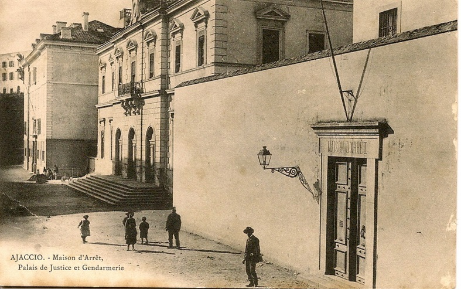
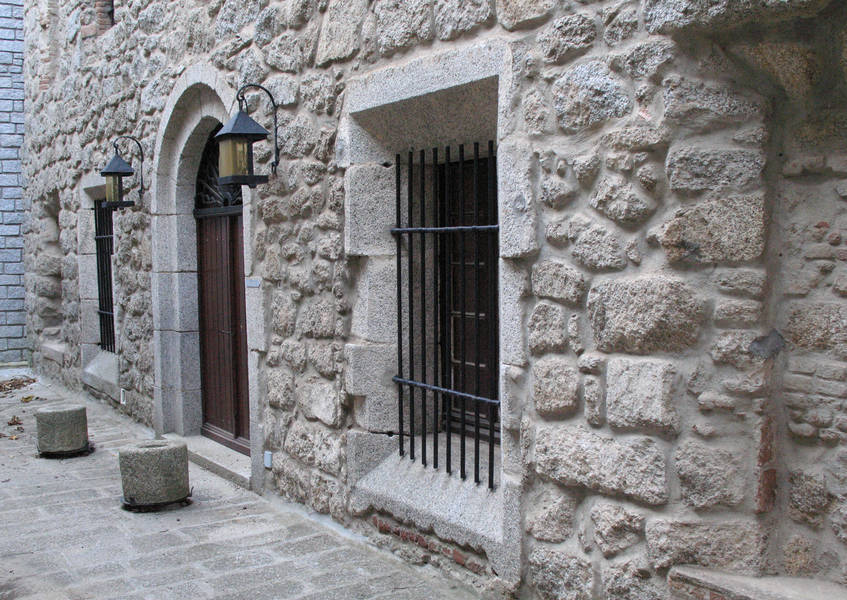
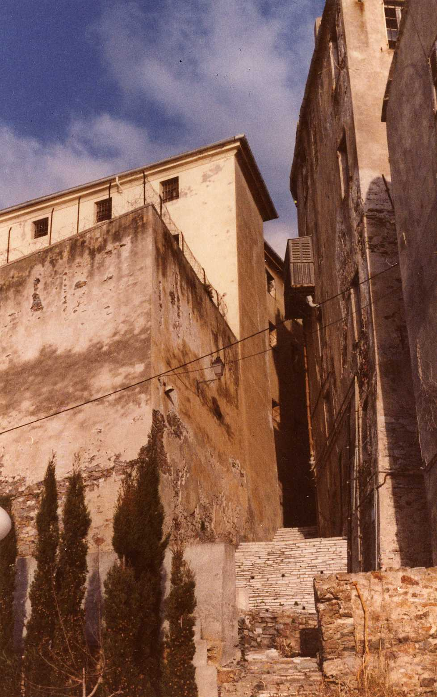
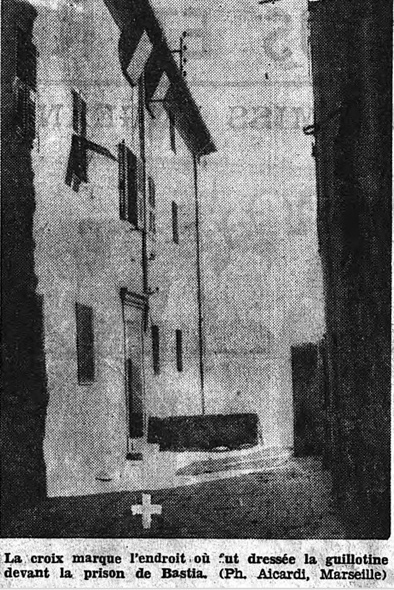
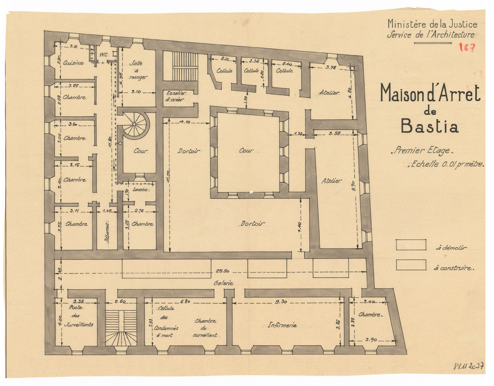
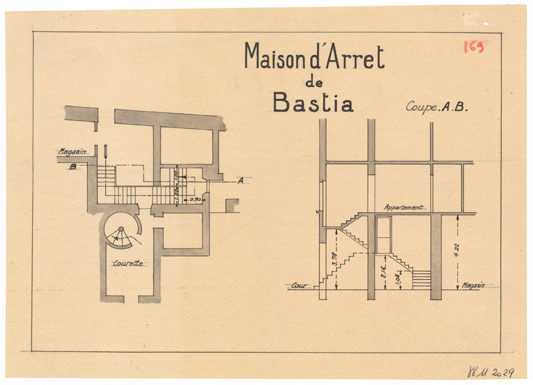
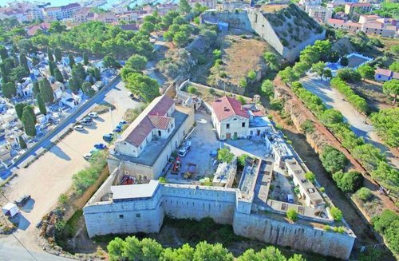

| Département | Images | Ville | Nom | Adresse | Période | Capacité | Histoire du lieu | Nombre d'exécutions |
| Corse-du-Sud (2A) |  |
Ajaccio | Maison d'arrêt | 9, boulevard Masseria | En service depuis 1878 | 80 places (1962) 53 places (2015) |
Ses 1787 m² s'étendent sur quatre niveaux, juste à côté du palais de justice. Une affaire defraye la chronique en 1984 quand un commando de trois membres du FLNC, déguisés en gendarmes, rentrent dans la prison pour y abattre deux détenus, suspectés d'avoir trempé dans le meurtre de Guy Orsoni, un militant. Dans les années 2010, on songeait à la désaffecter, mais finalement, en 2013, décision a été prise de la rénover. | Aucune exécution |
| Corse-du-Sud (2A) |  |
Sartène | Maison d'arrêt | Rue Croce | 1843-1945 | Devenu musée départemental de la préhistoire en 1977. | Aucune exécution | |
| Haute-Corse (2B) |     |
Bastia | Maison d'arrêt Sainte-Claire | Rue Sainte-Claire | 1817-1993 | 61 places (1962) | En remplacement des prisons situées jusqu'alors dans les donjons du Gouverneur, on choisit sous la Restauration le couvent Sainte-Claire, partie de la Citadelle, vieille de deux siècles et fermée sous la Révolution. Surnommée la "prison gruyère" à cause d'évasions fréquentes, d'une superficie de 940 m², la prison comprenait, au 1er étage, une cellule pour condamnés à mort. Trois de ses occupants furent guillotinés à la porte-même de la prison. La loi du 24 juin 1939 abolissant les exécutions publiques fit de Bastia la seule ville de Corse où la guillotine pouvait fonctionner. C'est assez curieux quand on voit l'exiguïté des lieux. Plus précisément, la prison a cinq cours : une centrale, et quatre latérales. Toutes sont inaccessibles en voiture - ce qui aurait obligé les bourreaux à transporter les pièces de la guillotine une à une par la porte d'entrée principale de la prison - et il semble peu probable que l'on eut employé les cours latérales car les fenêtres des dortoirs et du couloir de la mort donnent en plein dessus ! L'occasion ne se présentera jamais : en 1945, un condamné est passé par les armes, et les deux derniers condamnés bastiais, en 1949, voient leur arrêt cassé, et finiront suppliciés à Marseille suite à un nouveau procès. A l'ouverture de la nouvelle prison de BOrgo, la vieille prison est fermée, puis après neuf ans d'attente, vendue aux enchères 420.000 euros par une société hôtelière en décembre 2002. | Trois exécutions en 1914, 1934 et 1935 |
| Haute-Corse (2B) |  |
Calvi | Maison d'arrêt - Caserne Charlet | Lieu-dit "Plena" | 1855-1926 | Baptisé fort de la Torretta à sa construction en 1845, devait servir de caserne moderne. Fait face au cimetière. Actuellement en travaux pour accueillir, dès le printemps 2015, le centre de conservation du patrimoine mobilier de Corse. | Aucune exécution | |
| Haute-Corse (2B) | Corte | Maison d'arrêt | Lieu-dit "Porette" | 1893-1926 | Aucune exécution |
{kind=link}
{kind=link}
{kind=link}
{kind=link}
{kind=link}
{kind=link}
{kind=link}